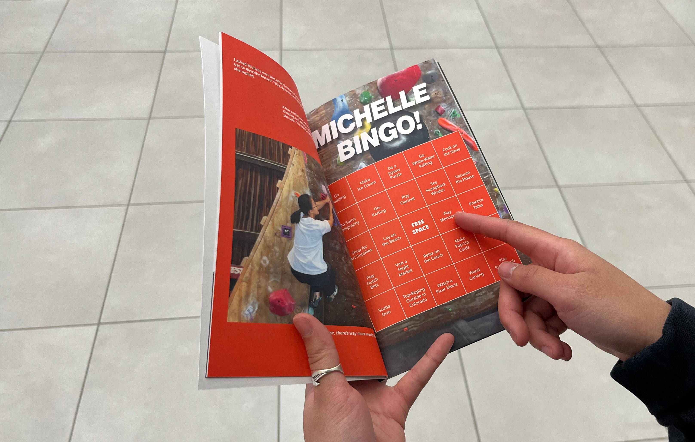
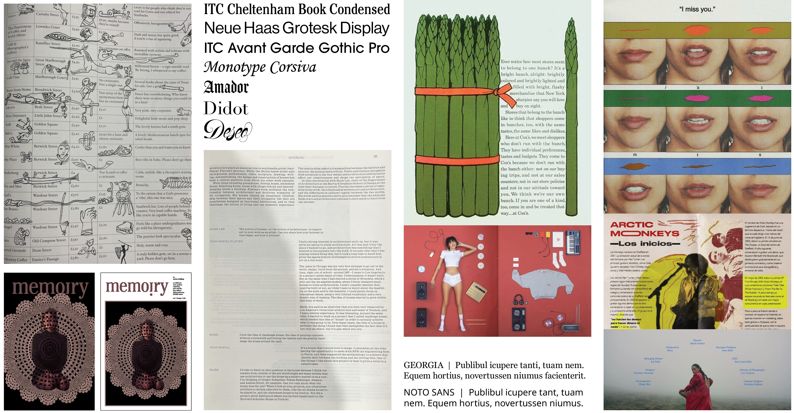
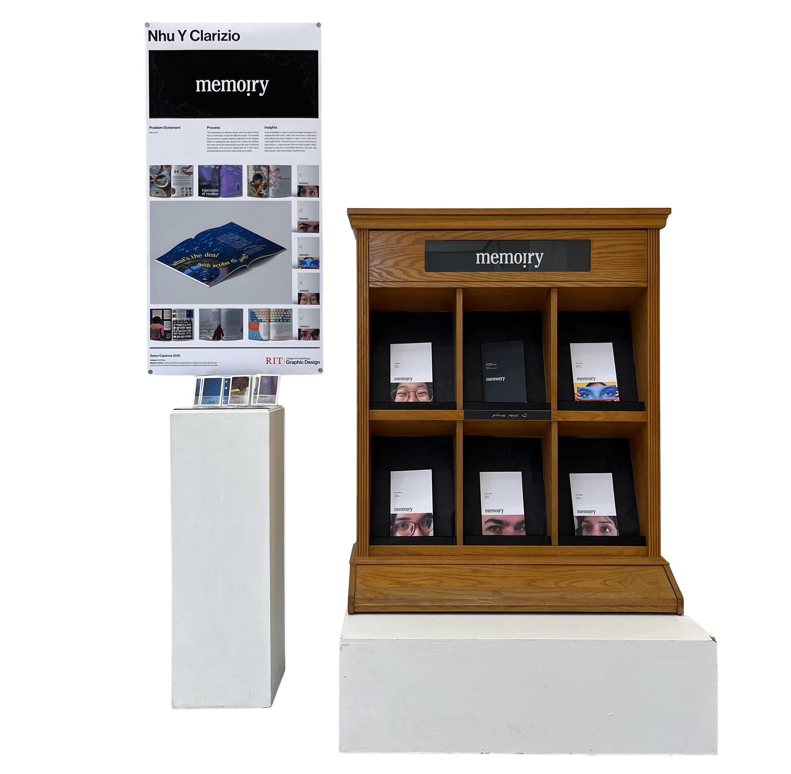
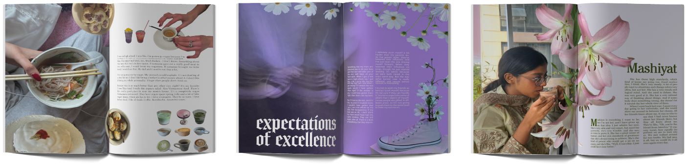
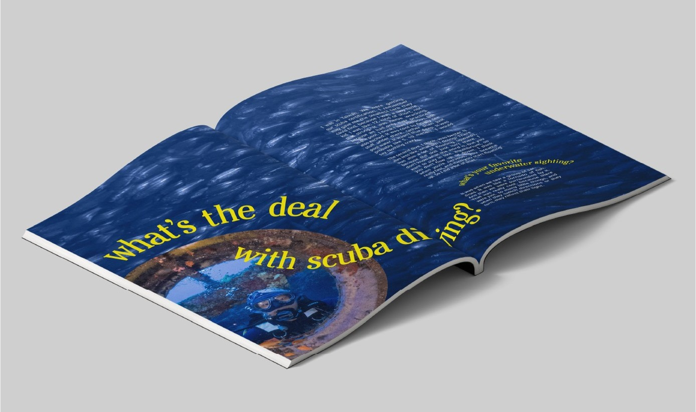
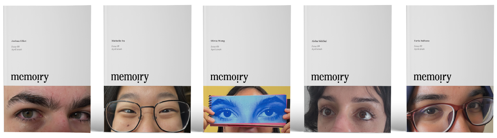
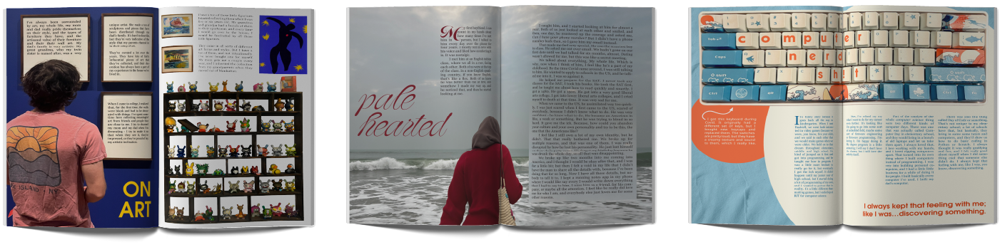
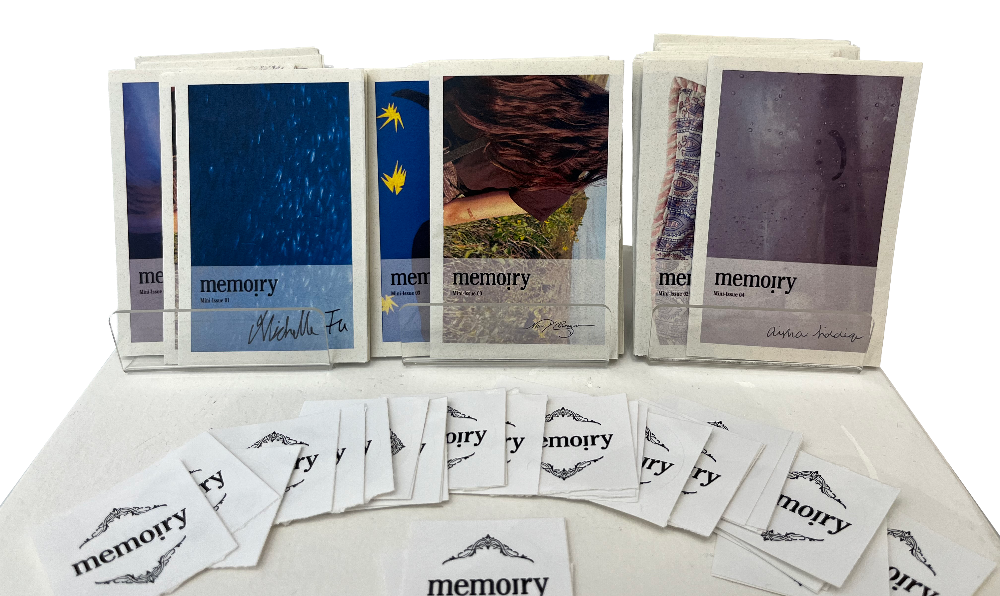
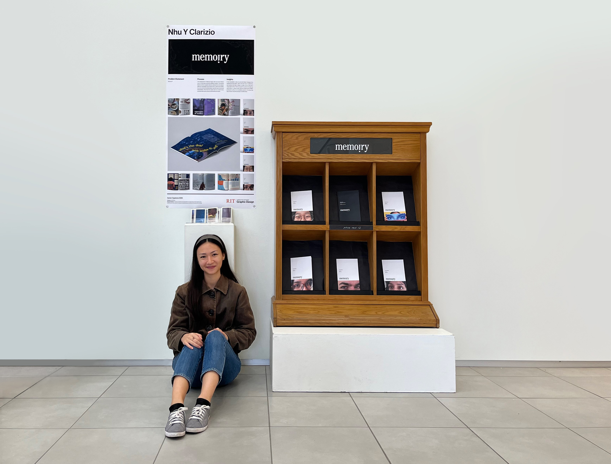

Michelle Fu | Faria Sultana | Joshua Elliot | Aisha Siddiqi | Olivia Wong
The beside is an excerpt from The Paris Review. When I read this interview, I knew
immediately that this was the sort of thing I wanted to accomplish. The interviewer has obtained a response
from the subject that reveals what the subject believes about himself or the world. This probably has less
to do with the skill of the interviewer rather how articulate the subject is. But the impact is the
same.
SIMENON:...Writing is not a profession but a vocation of unhappiness.
I
don’t think an artist can ever be happy.
INTERVIEWER: Why?
SIMENON: Because, first, I
think that if a man has the urge to be an artist, it is because he needs to find himself. Every writer tries
to find himself through his characters, through all his writing.
INTERVIEWER: He is writing for
himself?
SIMENON: Yes. Certainly.

I conducted more than thirteen hours of interviews across five people and two semesters. I knew how different these people were before the interviews, but talking to them at length has just reinforced this idea. Some are excellent interviewees. They are articulate, or have the ability to tell a story, or never miss a detail. Other subjects, not so much. They’re quiet, secretive, or otherwise communicate in ways that I am not used to. I tried to ask a lot of the same foundational questions to each person, and then let natural conversation follow.

I’m glad that I chose this to be my senior project. Out of all things, I think that I enjoyed it as much as anyone could have. I liked setting aside time to get to know everyone better. I liked collecting photos to go along with themes and taking a glimpse into their lives. I liked the tedium of getting the words to say exactly what we wanted them to mean, and the approval of everyone when it was done.
“Is it you?” I asked one of them. “No,” they replied. “But I don’t think that’s the point. It’s both of us.”





It was impossible to stop my personal design language from seeping into each page. I wish I had more time to dedicate to each person and issue. Design is a labor of love. Who am I? I was made for this. There is so much to a person’s life that we aren’t privy to – unless we ask. Who are these people? What I produced is still an incomplete portrait of the lives that they’ve lived. I hope they all stay in my life forever.
